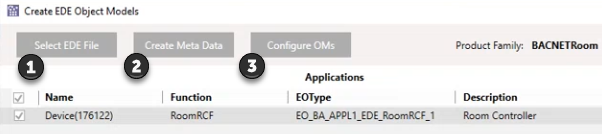
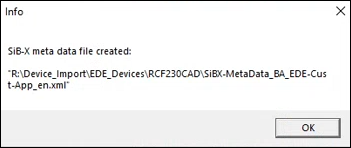
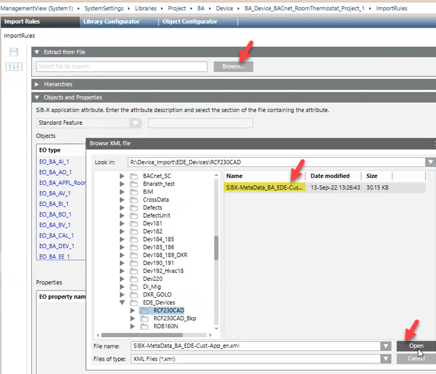

Creating an object model for 3rd party room devices
This procedure consists of 3 steps basically done with the EdeApplications.exe tool.
- Load and read the EDE file.
- Create the meta data file, and import into the Desigo CC library to create the object model.
- Create a basic configuration for the properties of the object model.


After you have created the object model, you can import the 3rd party room device just like a Siemens room device.
Importing Siemens room devices with an EDE file
Create an object model for 3rd party room devices
- You have a valid EDE file of a 3rd party room device.
- The library BA_Device_BACnet_RoomThermostat_HQ_1 is installed.
- Click Create Meta Data.
- The tool creates an xml file with meta data information. The xml file is in the same location as your EDE file.

- Open Management view > SystemSettings > Libraries.
- Go to HQ > BA > Device > BA_Device_BACnet_RoomThermostat_HQ_1.
- Customize the library according to your requirements.
- Open the Import Rules of the customized library.
- Open Extract from file, and click Browse.
- Select the created meta data file.

- The new object of the object model is created.
- Click Save.
- The new object model is visible in your library.
- Go back to the EdeApplications.exe.
- Click Configure OMs.